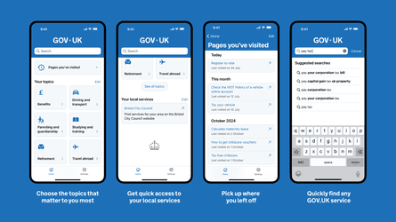

A government app intended to “cut life admin” will be free to download by millions of UK citizens from Tuesday, but its functions will be limited and the cabinet minister in charge has admitted: “The design is not as we would like it to be.”
The gov.uk app will be accessible on smartphones for people aged 16 and over and is intended to be the main mobile hub for many citizen interactions with the government, although not the NHS or HM Revenue and Customs.
Peter Kyle, the secretary of state for science and technology, said the version launched this week would only steer users to existing government webpages, with more functionality to be added by the end of the year.
A generative artificial intelligence chatbot trained on 700,000 pages of the gov.uk website is not yet ready. Technology to allow people to deal with and track government benefits such as childcare allowances through the app will come later too.
The app is also expected to deliver personal notifications such as when car MOTs are due and when citizens need to register to vote. Warnings about hot weather could be tailored geographically if the user enters their postcode.
The chatbot will be powered by a large language model provided by Anthropic, a leading Silicon Valley AI company backed by Amazon, but officials said the data from citizens’ questions would not be accessible to Anthropic.
Screens showing app including suggested searches and finding local services.Illustration: gov.uk
The main app functions available at launch from 6am on Tuesday will allow users to customise the app to focus on the main government services they interact with, and then to use the app to search webpages.
“What I don’t want to do is say that we are fully where we want to be in terms of the service right now,” said Kyle, who pledged in January to launch the app in June. “For example, the design is not as we would like it to be … But you will be able to do things faster, and you will be able to find services where in the past you would have given up because it’s a pain in the neck getting there.”
The app is being built by the government digital service, its in-house tech arm. The launch of the app to tens of millions of people comes at the stage described internally as “minimum viable product”. It will eventually be linked to a digital wallet, which will include a digital driving licence by the end of the year. Kyle said this would have the “digital ID card functions, the age-verification functions that go along with the offline version of the driving licence”.
Asked if a digital ID could be developed that would include information on immigration status or records of interactions with the criminal justice system, Kyle did not rule it out, but he said: “This is all we are planning at the moment.”